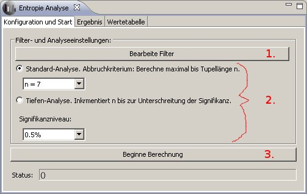
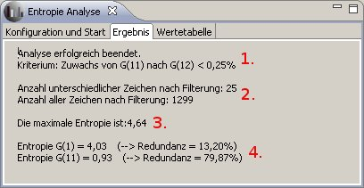
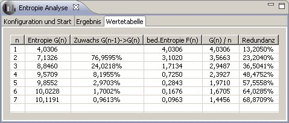

Entropie-Analyse
Das Entropie-Analyse Plug-in berechnet den Wert der Entropie nach Claude Elwood Shannon [1].
Es benutzt den Texteditor als Nachrichtenquelle. Nach Eingabe einer Zeichenfolge im Editor kann die Berechnung über den Tab
"Konfiguration und Start" begonnen werden. Die Ergebnisse befinden sich nach erfolgreicher Berechnung in den Tabs "Ergebnis" und "Wertetabelle".
Tab "Konfiguration und Start"
Um die Berechnung zu starten, sind folgende drei Schritte nötig:
- Einstellen der zu berücksichtigenden Zeichen (Alphabet)
- Auswahl des Analyse-Modus (Standard oder tief)
- Beginn der Berechnung mit den getroffenen Einstellungen

Analyse-Modus
- Standard-Analyse:
Es werden statistische Abhängigkeiten zwischen den Zeichen bis maximal zur vorgegebenen Tupellänge n berücksichtigt.
Abbruchkriterium: Die Analyse wird beendet, wenn eine der folgenden Bedingungen erfüllt ist: Die vorgegebene Tupellänge n wurde erreicht,
oder das eingestellte Signifikanzniveau wurde unterschritten.
- Tiefen-Analyse:
Die zu berücksichtigende Tupellänge wird automatisch nach jedem Durchlauf um eins inkrementiert bis der Zuwachs der Entropie das
vorzugebende Signifikanzniveau unterschreitet.
Abbruchkriterium: Die Analyse wird erst dann beendet, wenn das Signifikanzniveau unterschritten wird.
Tab "Ergebnis"
Dieses Tab zeigt eine Zusammenfassung der errechneten Werte. Der folgende Screenshot zeigt ein Beispiel.

Erläuterung der Kennzahlen
- Abbruchkriterium: Hier wird angegeben, welches Kriterium zur Beendigung der Analyse geführt hat. Dabei gibt es zwei
Möglichkeiten: Entweder
wurde die vorgegebene Tupellänge n erreicht, oder das Signifikanzniveau wurde
beim Zuwachs der Entropie unterschritten.
- Anzahl der Zeichen: Die Werte beziehen sich auf die Anzahl der Zeichen,
nachdem die eingestellten Filterkriterien angewandt wurden. Der erste Wert
gibt die Anzahl der unterschiedlichen Zeichen, der zweite Werte die gesamte
Anzahl der Zeichen an.
- Maximale Entropie: Der Wert der maximalen Entropie (unter Annahme von Gleichverteilung der Zeichen).
- Entropie: Hier werden zwei Werte geliefert. Zum Einen die Entropie unter
Berücksichtigung der Auftrittswahrscheinlichkeiten der einzelnen Zeichen,
und zum Anderen die Entropie unter Berücksichtigung von Abhängigkeiten
der maximalen Länge n.
"Wertetabelle"
Diese Tabelle zeigt alle errechneten Werte unter Berücksichtigung der statistischen Abhängigkeiten beginnend bei einzelnen Zeichen bis hin zu n-Tupeln.

G(n) ist die (absolute) Entropie unter Berücksichtigung von n-Tupeln.
F(n) ist die bedingte Entropie der n-ten Zeichen unter Bedingung des vorangegangenen (n-1)-Tupels.
Quellen:
- [1]
Shannon, Claude E. ; Weaver, Warren: The mathematical theory of communication. Urbana and Chicago : University of Illinois Press, 1998. ISBN 0-252-72548-4